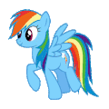

Konferencja Prasowa
Narodowa Gra Komputerowa
Nasza Ojczyzna pogrąża się w kryzysie. Gdzie nie spojrzeć degręgolada moralna, rozpusta i upadek. Jako As Prawdziwej
Prawicy wstajesz z kolan i walczysz o to co najważniejsze: aneksję Unii Europejskej przez Polskę oraz obowiązkowe
stosowanie kalendarzyka małrzeńskiego. Twoim pierwszym zadaniem jest skuteczne przeprowadzenie konferencji prasowej.
Więcej informacji...
Alleluja i do przodu!
Alleluja i do przodu!
Wystepuja
Robert
As Prawicy który laserom się nie kłania (czyli Ty).Krucjator
Mędrzec Opatrznościowy, ochraniaj go by się nie zagubił we własnej retoryce.Pani od Mariana
Element o niepewnym umocowaniu ideologicznym. Musisz oprzeć się jej urokom w imię Sprawy Narodowej.Konik Internacjonalny
 Roznosi degrengoladę i zgniliznę moralną - za wszelką cenę nie może przeżyć.Ojciec Dyrektor
 Zbieraj Latające Łaski Ojca Dyrektora aby powiększyć Wielką Polskę.
Zbieraj Latające Łaski Ojca Dyrektora aby powiększyć Wielką Polskę.